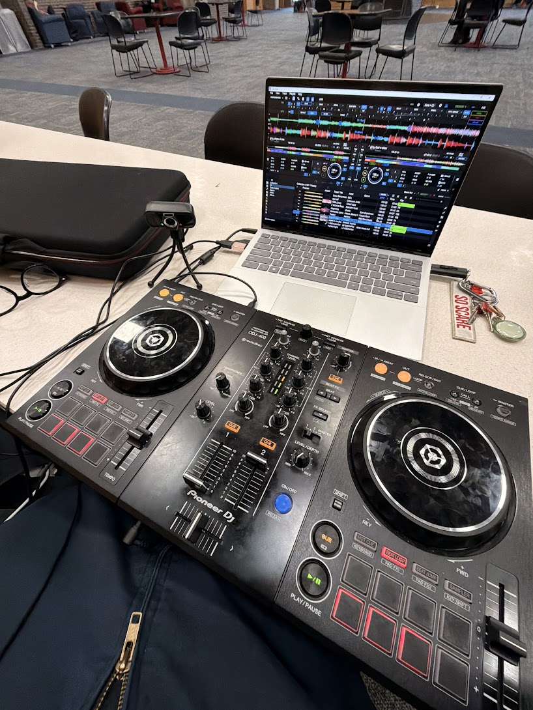
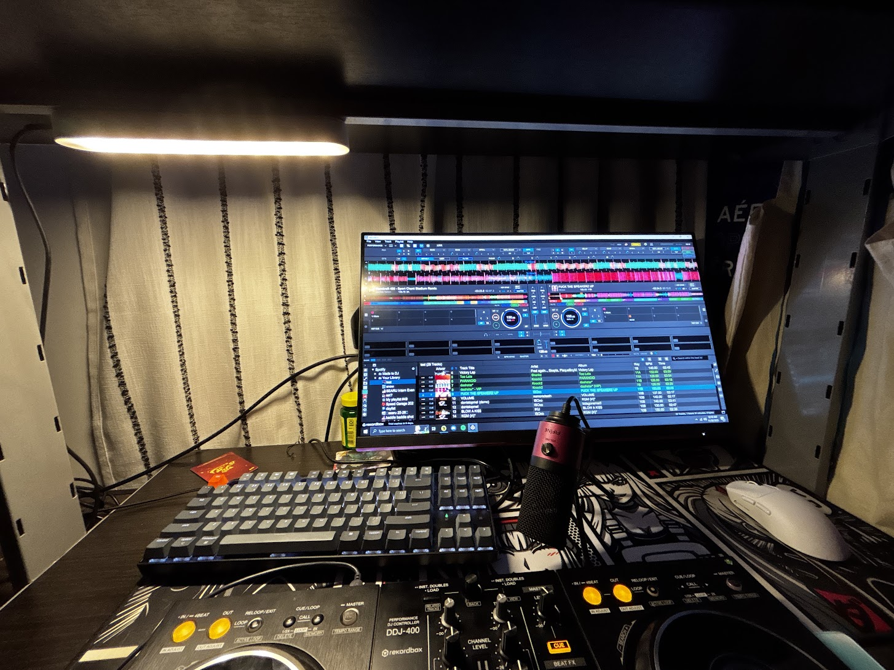

Review: Pioneer DDJ-400 Controller
The Pioneer DDJ-400 is considered one of the best starter DJ controllers in the market!

This controller provides all a beginner would need to get started! Responsive and smooth jog wheels, a well-sized tempo slider that provides smaller adjustments, 16 performance pads, and much more!
Check out the official specs on the Pioneer DJ website.
Review: Home Practice Station
Creating a dedicated space for mixing is essential for progress. My current home setup focuses on ergonomics and visibility, ensuring that long practice sessions don't lead to fatigue.

The addition of a high-mounted monitor and dedicated lighting has significantly improved my workflow. By having the Rekordbox waveforms at eye level, I can maintain better posture while mixing.
While the setup is compact, it utilizes every inch of the desk efficiently, proving that you do not need a massive studio to produce professional-sounding results.